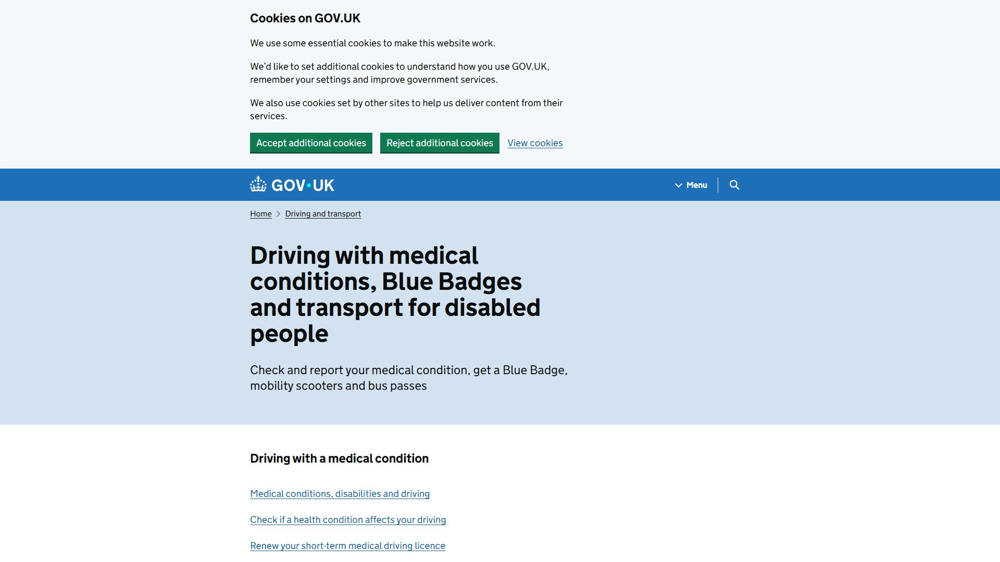

Start with a human goal.
Pick the thing someone came to do. Give it a clear finish line.
Find the application →
KEYBOARD JOURNEY INTELLIGENCE
A customer is ready. A service is needed. One unreachable button can stop everything.
Find the barrier. Prove the repair. Let people finish.
Find a bus-pass application.One ordinary task. A little more independence.

REAL JOURNEYS WE’VE PUT THROUGH THEIR PACES
FROM “IT LOOKS FINE” TO “THEY CAN FINISH.”
Can someone reach the information they need? Get through a dialog? Complete checkout? Can I Finish turns those questions into browser journeys your team can reproduce.
Pick the thing someone came to do. Give it a clear finish line.
Run the journey in Chromium. Inspect the focus trail, screenshots and exact point of failure.
Review the AI proposal. Change the code. Run the identical task again and keep the regression test.
GO BEYOND THE CHECKLIST
Access means getting somewhere.
Open a captured journey and follow the keys.
Find Apple’s iPhone VoiceOver guide.
Find where to apply for a disabled person’s bus pass.
See the merchant checkout before and after the repair.
A screenshot shows where. The focus trace shows how. A rerunnable contract helps keep the barrier from coming back.
Open the checkout evidence ↗Browser-backed evidenceKeys, focus, screenshots and the original recording.
01AI-assisted repair proposalsYour source and the observed finding, on your device.
02A test that goes with the fixExport the task and run it after the next release.
03BUILD A WEB PEOPLE CAN FINISH.